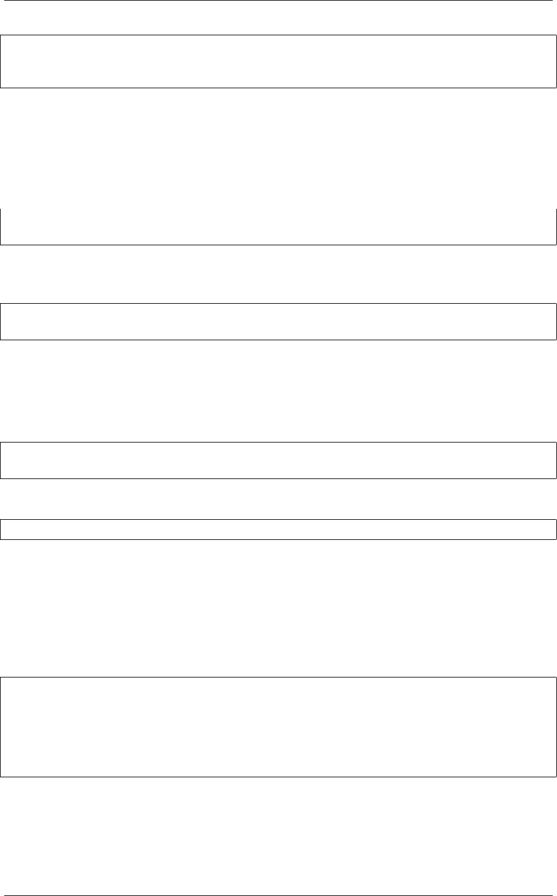

《Python Cookbook》第三版, Release 2.0.0
prices_and_names =zip(prices.values(), prices.keys())
print(min(prices_and_names)) # OK
print(max(prices_and_names)) # ValueError: max() arg is an empty sequence
3.8.3 讨论
如果你在一个字典上执行普通的数学运算，你会发现它们仅仅作用于键，而不是
值。比如：
min(prices) # Returns 'AAPL'
max(prices) # Returns 'IBM'
这个结果并不是你想要的，因为你想要在字典的值集合上执行这些计算。或许你会
尝试着使用字典的 values() 方法来解决这个问题：
min(prices.values()) # Returns 10.75
max(prices.values()) # Returns 612.78
不幸的是，通常这个结果同样也不是你想要的。你可能还想要知道对应的键的信息
(比如那种股票价格是最低的？)。
你可以在 min() 和max() 函数中提供 key 函数参数来获取最小值或最大值对应的
键的信息。比如：
min(prices, key=lambda k: prices[k]) # Returns 'FB'
max(prices, key=lambda k: prices[k]) # Returns 'AAPL'
但是，如果还想要得到最小值，你又得执行一次查找操作。比如：
min_value =prices[min(prices, key=lambda k: prices[k])]
前面的 zip() 函数方案通过将字典”反转”为(值，键)元组序列来解决了上述问
题。当比较两个元组的时候，值会先进行比较，然后才是键。这样的话你就能通过一
条简单的语句就能很轻松的实现在字典上的求最值和排序操作了。
需要注意的是在计算操作中使用到了 (值，键)对。当多个实体拥有相同的值的时
候，键会决定返回结果。比如，在执行 min() 和max() 操作的时候，如果恰巧最小或
最大值有重复的，那么拥有最小或最大键的实体会返回：
>>> prices ={'AAA':45.23,'ZZZ':45.23 }
>>> min(zip(prices.values(), prices.keys()))
(45.23, 'AAA')
>>> max(zip(prices.values(), prices.keys()))
(45.23, 'ZZZ')
>>>
3.8. 1.8 字典的运算 19